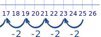
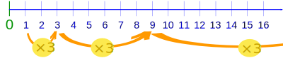
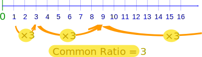
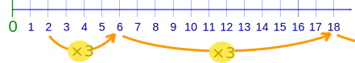

Common Number Patterns
Numbers can have interesting patterns.
Here we list the most common patterns and how they are made.
Arithmetic Sequences
An Arithmetic Sequence is made by adding the same value each time.
Example:
| 1, 4, 7, 10, 13, 16, 19, 22, 25, ... |
This sequence has a difference of 3 between each number.
The pattern is continued by adding 3 to the last number each time, like this:

Example:
| 3, 8, 13, 18, 23, 28, 33, 38, ... |
This sequence has a difference of 5 between each number.
The pattern is continued by adding 5 to the last number each time, like this:

The value added each time is called the "common difference"
What is the common difference in this example?
| 19, 27, 35, 43, ... |
Answer: The common difference is 8
The common difference could also be negative:
Example:
| 25, 23, 21, 19, 17, 15, ... |
This common difference is −2
The pattern is continued by subtracting 2 each time, like this:

Geometric Sequences
A Geometric Sequence is made by multiplying by the same value each time.
Example:
| 1, 3, 9, 27, 81,243, ... |
This sequence has a factor of 3 between each number.
The pattern is continued by multiplying by 3 each
time, like this:

What we multiply by each time is called the "common ratio".
In the previous example the common ratio was 3:

We can start with any number:
Example: Common Ratio of 3, But Starting at 2
| 2, 6, 18, 54,162,486, ... |
This sequence also has a common ratio of 3, but it starts with 2.

Example:
| 1, 2, 4, 8, 16, 32, 64,128,256, ... |
This sequence starts at 1 and has a common ratio of 2.
The pattern is continued by multiplying by 2 each
time, like this:

The common ratio can be less than 1:
Example:
| 10, 5, 2.5, 1.25, 0.625, 0.3125, ... |
This sequence starts at 10 and has a common ratio of 0.5 (a half).
The pattern is continued by multiplying by 0.5 each
time.
But the common ratio can't be 0, as we get a sequence like 1, 0, 0, 0, 0, 0, 0, ...
Special Sequences
There are also many special sequences, here are some of the most common:
Triangular Numbers
| 1, 3, 6, 10, 15, 21, 28, 36, 45, ... |
This Triangular Number Sequence is generated from a pattern of dots that form a triangle.
By adding another row of dots and counting all the dots we can find the next number of the sequence:

Square Numbers
| 0, 1, 4, 9, 16, 25, 36, 49, 64, 81, ... |
They are the squares of whole numbers:
0 (=0×0)
1 (=1×1)
4 (=2×2)
9 (=3×3)
16 (=4×4)
etc...
Cube Numbers
| 1, 8, 27, 64,125,216,343,512,729, ... |
They are the cubes of the counting numbers (they start at 1):
1 (=1×1×1)
8 (=2×2×2)
27 (=3×3×3)
64 (=4×4×4)
etc...
Fibonacci Numbers
| 0, 1, 1, 2, 3, 5, 8, 13, 21, 34, ... |
The Fibonacci Sequence is found by adding the two numbers before it together.
The 2 is found by adding the two numbers before it (1+1)
The 21 is found by adding the two numbers before it (8+13)
The next number in the sequence above would be 55 (21+34)
Can you figure out the next few numbers?
Other Sequences
There are lots more! You might even think of your own ...